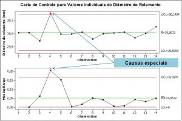
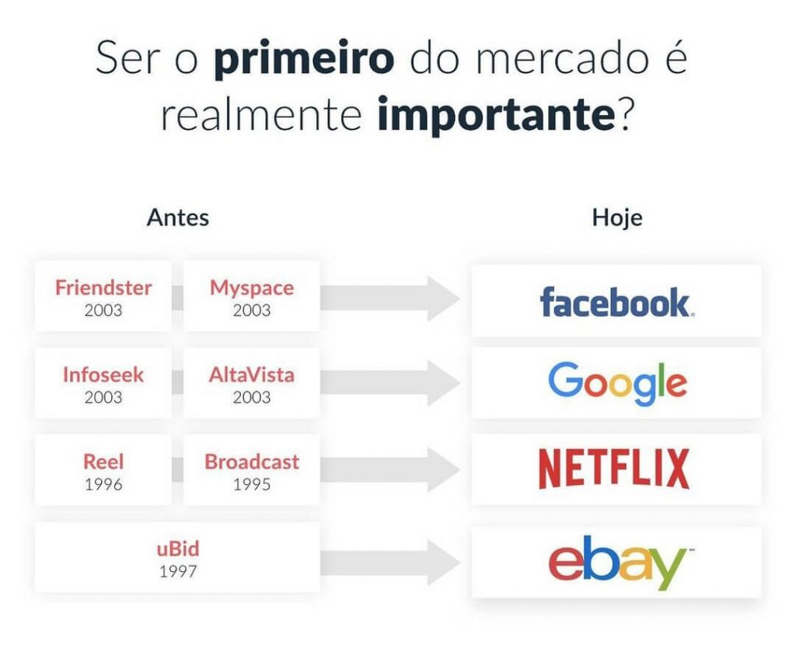
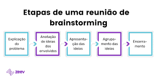
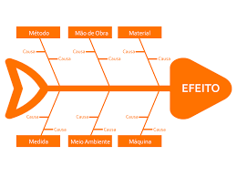
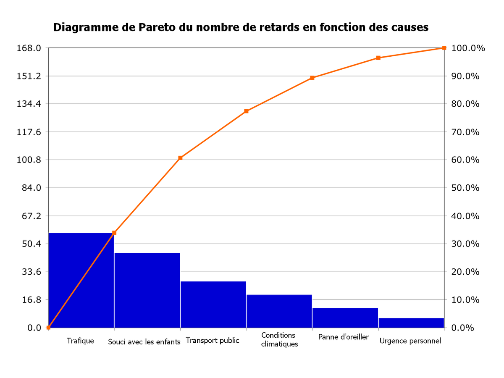

Métodos de Ferramentas de Qualidade
Cinco Sensos(5S)
A metodologia 5S é focada na organização de empresas e conquista da qualidade total. O 5S é baseado em Seiri (utilização), Seiton (organização), Seiso (limpeza), Seiketsu (normalização) e Shitsuke (disciplina). Veja a imagem a baixo:
Folha de Verificação
A folha de verificação, também chamada de lista de recolhimento de erros e checklist de defeitos, é, basicamente, um material para a coleta de dados. Esta pode ser desenvolvida em formatos diversos, sendo adaptável à necessidade da empresa e podendo ser em forma de tabela, planilha ou formulário. Veja abixo
Ciclo PDCA
O ciclo PDCA é uma importante ferramenta relacionada à qualidade e melhoria de processos. A ideia é relativamente simples, cada letra representa uma etapa: Plan – Do – Check e Act que se referem às fases de um plano de ação contínuo e cíclico.O ciclo PDCA é uma forma eficaz de melhorar o desempenho de processos, projetos, produtos ou serviços.Veja Abaixo:
5W2H
O que é a ferramenta 5W2H? A ferramenta 5W2H transforma em ações práticas toda a análise e a formulação de estratégias idealizadas para o plano de ação. O 5W2H é, portanto, um checklist que indica as atividades, os prazos e as responsabilidades de todos os envolvidos em um projeto. Vejaq a imagem como modelo:
Fluxogama
Um fluxograma é um diagrama que descreve um processo, sistema ou algoritmo de computador. São amplamente utilizados em várias áreas para documentar, estudar, planejar, melhorar e comunicar processos complexos por meio de diagramas claros e fáceis de entender. Fluxogramas usam retângulos, ovais, diamantes e muitas outras formas para definir os tipos de passos, assim como setas conectoras para definir fluxo e sequência. Veja a imagem como exemplo
Controle Estátisco do Processo (CEP)
O Controle Estatístico de Processos, ou simplesmente CEP, é considerado uma das 7 ferramentas da qualidade, e é um método de coleta e verificação de amostra de resultados de um processo, a fim de controlar seu funcionamento e diminuir as falhas decorrentes da sua execução. Veja a imagem a baixo:
Benchmarking
Benchmarking é um processo de estudo de concorrência, podendo ser uma análise profunda das melhores práticas usadas por empresas de um mesmo setor que o seu e que podem ser replicadas no seu empreendimento. Entre seus benefícios estão a redução de custos, aumento na produtividade e ampliação na margem de lucro.Basicamente, o benchmarking consiste em olhar para a concorrência e entender o que essas empresas estão fazendo para obter sucesso, para então replicar as estratégias que também fazem sentido para o seu negócio Veja a imagem a baixo
Brainstorming
Por exemplo, pergunte: “Como a gente pode melhorar os tempos de resposta dos clientes?” ao em vez de algo geral como: “Como a gente pode oferecer melhores serviços ao cliente?” A partir daí, anote diferentes ideias que estão relacionadas a essa pergunta e anote elas em balões separados em torno da pergunta central. Veja a imagem abaixo:
Diagrama de ishikawa
O Diagrama de Ishikawa, também conhecido como Espinha de Peixe ou Diagrama de Causa e Efeito, é uma ferramenta de análise de processos que permite identificar as causas raízes de um problema.Ele foi desenvolvido pelo engenheiro Kaoru Ishikawa em meados da década de 40 e é amplamente utilizado em diversas indústrias, como a alimentícia, farmacêutica, de manufatura e outras. Veja a imagem abaixo

Diagrama de Pareto
O diagrama de Pareto é um gráfico de colunas que ordena as frequências das ocorrências, da maior para a menor, permitindo a priorização dos problemas, procurando levar a cabo o princípio de Pareto, isto é, há muitos problemas sem importância diante de outros mais graves. Veja a imagem abaixo:
